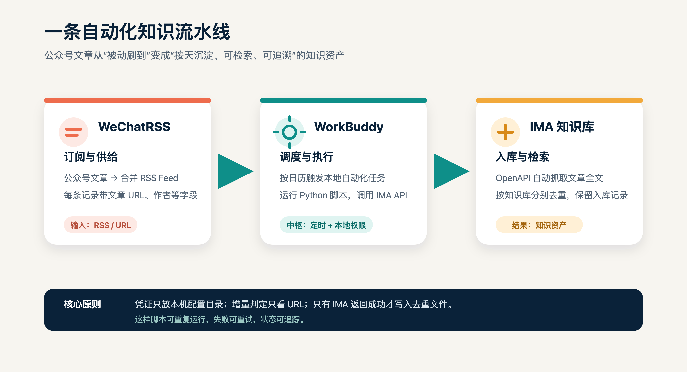
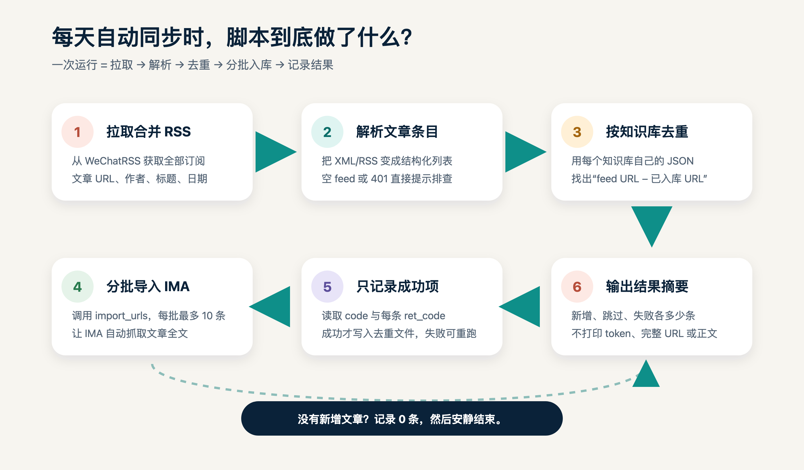
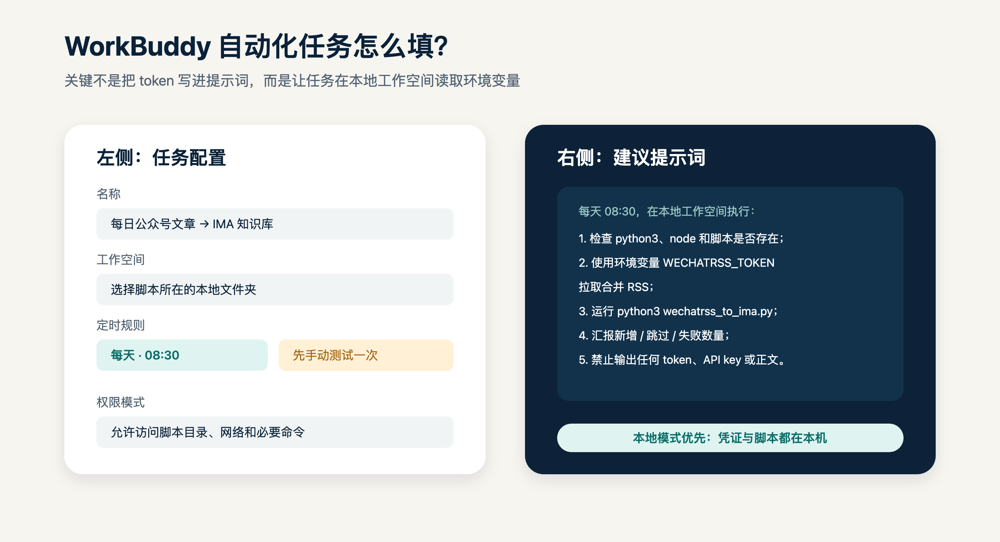
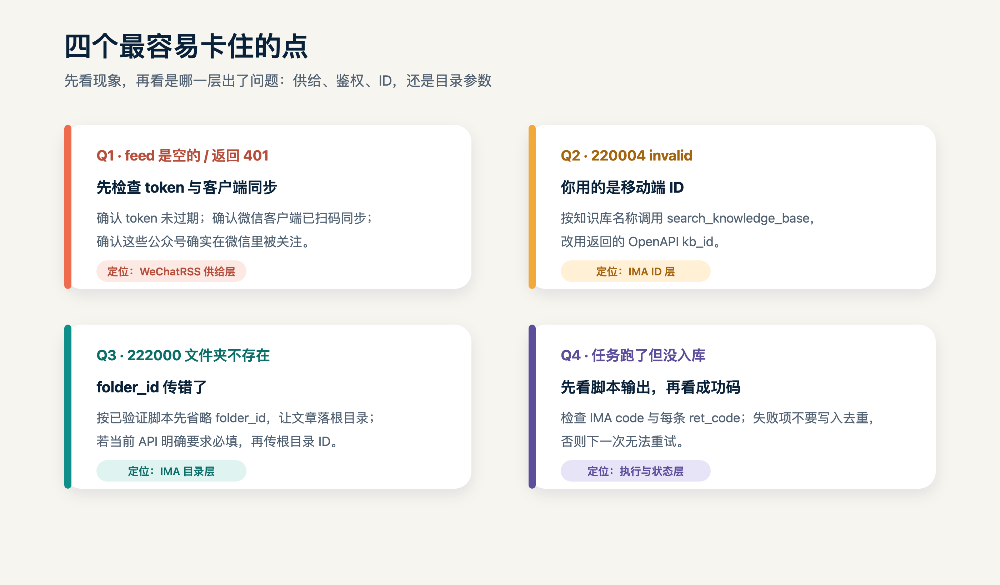

把公众号更新自动沉淀进 IMA：
WorkBuddy × WeChatRSS
一次配置，每天自动拉取订阅的公众号文章；只把新增内容写入指定的 IMA 知识库。
关注了几十个公众号，真正需要查资料时却总在微信里翻记录？这套方案把公众号文章变成一条可重复运行的知识流水线：WeChatRSS 负责供给，WorkBuddy 负责定时执行，IMA 负责入库和检索。
核心逻辑：有新文章就入库，没有新文章就结束；中途失败可以重试，已经成功的文章不会重复导入。
一、三个工具各做什么
WeChatRSS
订阅公众号，提供“全部订阅”合并 RSS 和文章 URL。
WorkBuddy
按时间触发本地脚本，连接 RSS、去重状态和 IMA API。
IMA
自动抓取文章全文，沉淀为可检索的知识库内容。

二、开始前要准备什么
- 一台可以联网的电脑，以及
python3、node。 - 能够访问本机脚本与配置文件的 WorkBuddy 本地工作空间。
- IMA OpenAPI skill、WeChatRSS JWT token、IMA 的
client_id和api_key。
~/.config/ima/，不要写进文章、截图、提示词或运行日志。三、在 WeChatRSS 建立文章入口
访问 WeChatRSS 官网。先在微信里关注目标公众号，再完成客户端同步。官网当前展示为“2 个公众号免费、付费 ¥9.9/月起”，价格和套餐以页面实际信息为准。
获取“全部订阅”合并 feed：
https://wechatrss.waytomaster.com/api/rss/all?token=<你的 WECHATRSS_TOKEN>在本机测试时使用环境变量：
export WECHATRSS_TOKEN="<完整 JWT>"
curl -sL "https://wechatrss.waytomaster.com/api/rss/all?token=$WECHATRSS_TOKEN" -o /tmp/rss_all.xml如果 feed 为空或返回 401，先检查 token、微信客户端同步状态和公众号关注关系。
四、配置 IMA OpenAPI
1. 凭证放在本机配置目录
mkdir -p ~/.config/ima
printf '%s' '<Client ID>' > ~/.config/ima/client_id
printf '%s' '<API Key>' > ~/.config/ima/api_key2. 找到 OpenAPI 侧的 kb_id
不要直接使用移动端或桌面端看到的知识库 ID。按名称搜索，取返回结果中的 data.info_list[].kb_id：
node <ima-skill 目录>/ima_api.cjs "openapi/wiki/v1/search_knowledge_base" \
'{"query":"<知识库名称>","cursor":"","limit":20}'多个知识库要分别配置自己的 OpenAPI kb_id 和去重文件。
五、用脚本做增量同步
脚本只做五件事：拉 RSS、解析文章、按知识库去重、每批最多 10 条调用 import_urls、成功后记录状态。示例脚本在素材包的 scripts/wechatrss_to_ima_example.py。
KBS = [
{
"name": "知识库 A",
"kb_openapi": "<OPENAPI_KB_ID>",
"dedup": STATE_DIR / "kb-a.json",
},
]建议每个知识库维护独立的 JSON 状态文件。这样知识库 A 入库后，不会误跳过知识库 B。

六、在 WorkBuddy 中创建每日自动化
WorkBuddy 的自动化任务通常需要填写任务名称、提示词、工作空间、权限模式和定时规则。不同版本入口名称可能略有变化，但关键是：选择能访问脚本与本机凭证的本地工作空间。

| 配置项 | 建议填写 |
|---|---|
| 任务名称 | 每日公众号文章 → IMA 知识库 |
| 工作空间 | 选择脚本所在的本地文件夹 |
| 执行频率 | 每天一次，例如 08:30 |
| 首次运行 | 先手动测试，再打开每日调度 |
可直接使用的提示词：
每天 08:30，在当前本地工作空间执行公众号文章入库任务：
1. 检查 python3、node、IMA_API_CJS 和脚本是否可用；
2. 使用环境变量 WECHATRSS_TOKEN 拉取合并 RSS；
3. 运行 python3 wechatrss_to_ima.py；
4. 只汇报新增、成功、失败数量和错误码；
5. 禁止输出 token、client_id、api_key、完整 feed URL 或文章正文；
6. 不要删除去重状态文件，不要重复导入已经成功的 URL。测试成功后，应看到“新增候选、成功入库、失败”的统计；没有新文章时，0 条新增是正常结果。
七、四层验收：不要只看“任务已完成”
- 供给层：RSS 可以拉取，XML 中有文章 URL。
- 增量层：第一次有新增，立刻重跑后新增应为 0。
- 接口层：顶层
code=0，每条ret_code=0，并能拿到media_id。 - 结果层：在 IMA 知识库里搜索标题或关键词，确认文章真的出现。
只有第四层通过，才算“执行成功并送达”。
八、常见报错与排查

| 现象 | 优先处理 |
|---|---|
| feed 为空 / 401 | 刷新 token，检查微信客户端同步和关注关系。 |
| 220004 invalid knowledge_base_id | 用 search_knowledge_base 获取 OpenAPI kb_id。 |
| 222000 文件夹不存在 | 检查 folder_id；按当前 skill 文档确认根目录参数。 |
| 任务完成但没有入库 | 同时看 code、每条 ret_code、去重文件和 IMA 实际检索结果。 |
九、为什么它可以反复运行
按 URL 去重：同一篇文章通常对应同一个公众号文章 URL。
按知识库隔离状态：同一篇文章可以分别进入不同知识库。
成功后再写状态：IMA 失败的文章不会被误标为已入库，下一次可以自然重试。
最小可用闭环：先订阅 1～2 个公众号，手动测试一次，确认 IMA 可以检索到文章，再把频率放大到每天。